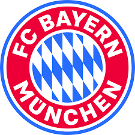

FC BAYERN STORE

A sporting goods retailer or sporting goods store is a retail business selling
sporting and recreational goods, including sportswear, sporting equipment and related general merchandise.
Sports equipment encompasses the tools, materials,
apparel, and gear used in various sports and physical activities, designed to enhance performance, safety, and
comfort for athletes and enthusiasts.
Here's a breakdown of sports equipment:
Types of Sports Equipment:
- Protective Gear: Helmets, pads, mouthguards, goggles, etc.
- Performance Gear: Athletic shoes, bats, rackets, balls, nets, etc.
- Apparel: Sportswear, athletic clothing, etc.
- Accessories: Water bottles, timers, bags, etc.
HOME